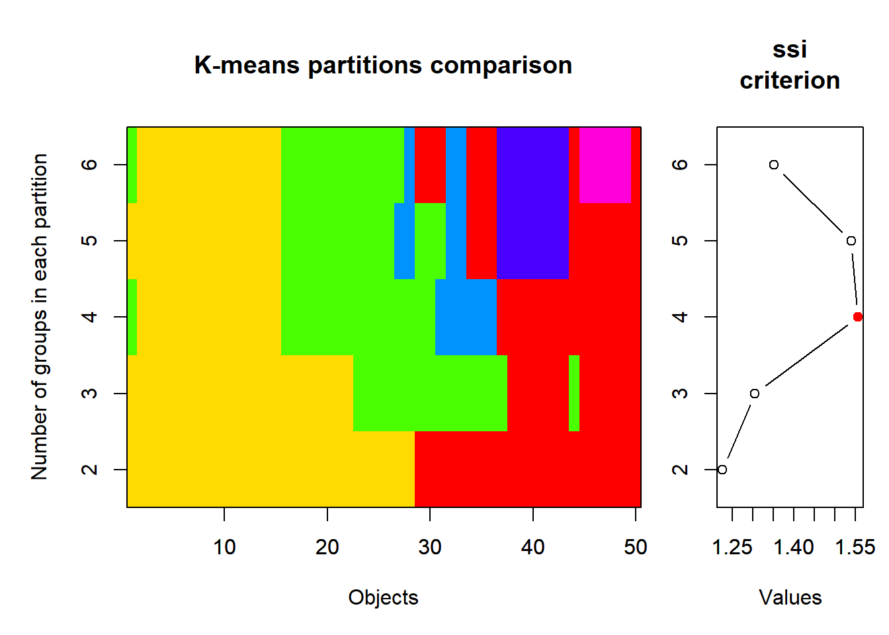
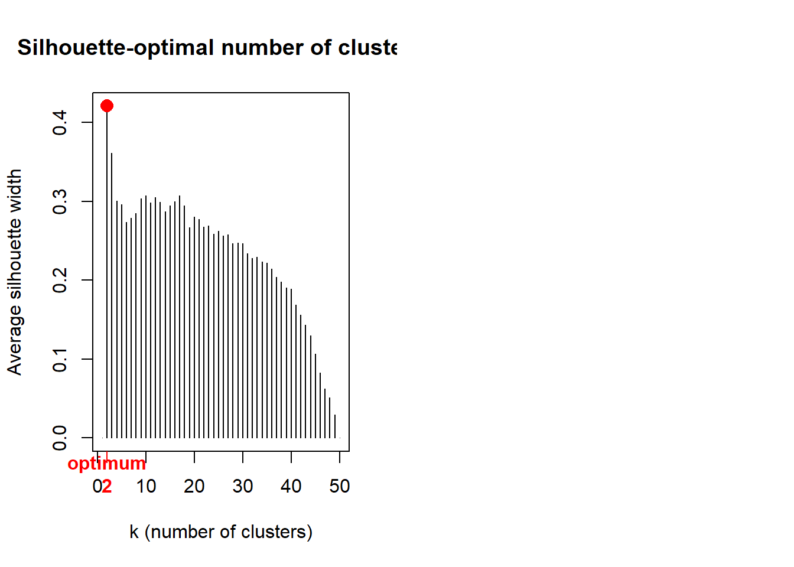

crime <- read.csv("datasets/statistik/crime2.csv", sep = ";")Stat8: Lösung
- Download dieses Lösungsscript via “</>Code” (oben rechts)
- Lösungstext als Download
Musterlösung Aufgabe 8.1: Clusteranalysen
Übungsaufgabe
(hier so ausführlich formuliert, wie dies auch in der Klausur der Fall sein wird)
- Ladet den Datensatz crime2.csv. Dieser enthält Raten von 7 Kriminatlitätsformen pro 100000 Einwohner und Jahr für die Bundesstaaten der USA.
- Führt eine k-means- und eine agglomerative Clusteranalyse eurer Wahl durch. Bitte beachet, dass wegen der sehr ungleichen Varianzen in jedem Fall eine Standardisierung stattfinden muss, damit die Distanzen zwischen den verschiedenen Kriminalitätsraten sinnvoll berechnet werden können.
- Überlegt in beiden Fällen, wie viele Cluster sinnvoll sind (k-means: z. B. visuelle Betrachtung einer PCA, agglomertive Clusteranalyse: z. B. Silhoutte-Plot).
- Entscheidet euch dann für eine der beiden Clusterungen und vergleicht dann die erhaltenen Cluster bezüglich der Kriminalitätsformen und interpretiert die Cluster entsprechend.
- Bitte erklärt und begründet die einzelnen Schritte, die ihr unternehmt, um zu diesem Ergebnis zu kommen. Dazu erstellt bitte ein Word-Dokument, in das ihr Schritt für Schritt den verwendeten R-Code, die dazu gehörigen Ausgaben von R, eure Interpretation derselben und die sich ergebenden Schlussfolgerungen für das weitere Vorgehen dokumentieren.
- Formuliert abschliessend einen Methoden- und Ergebnisteil (ggf. incl. adäquaten Abbildungen) zu dieser Untersuchung in der Form einer wissenschaftlichen Arbeit (ausformulierte schriftliche Zusammenfassung, mit je einem Absatz von ca. 60-100 Worten, resp. 3-8 Sätzen für den Methoden- und Ergebnisteil). D. h. alle wichtigen Informationen sollten enthalten sein, unnötige Redundanz dagegen vermieden werden.
- Abzugeben sind am Ende (a) Ein lauffähiges R-Skript; (b) begründeter Lösungsweg (Kombination aus R-Code, R Output und dessen Interpretation) und (c) ausformulierter Methoden- und Ergebnisteil (für eine wiss. Arbeit).
Lösung
crime
## X Murder Rape Robbery Assault Burglary Theft Vehicle
## 1 ME 2.0 14.8 28 102 803 2347 164
## 2 NH 2.2 21.5 24 92 755 2208 228
## 3 VT 2.0 21.8 22 103 949 2697 181
## 4 MA 3.6 29.7 193 331 1071 2189 906
## 5 RI 3.5 21.4 119 192 1294 2568 705
## 6 CT 4.6 23.8 192 205 1198 2758 447
## 7 NY 10.7 30.5 514 431 1221 2924 637
## 8 NJ 5.2 33.2 269 265 1071 2822 776
## 9 PA 5.5 25.1 152 176 735 1654 354
## 10 OH 5.5 38.6 142 235 988 2574 376
## 11 IN 6.0 25.9 90 186 887 2333 328
## 12 IL 8.9 32.4 325 434 1180 2938 628
## 13 MI 11.3 67.4 301 424 1509 3378 800
## 14 WI 3.1 20.1 73 162 783 2802 254
## 15 MN 2.5 31.8 102 148 1004 2785 288
## 16 IA 1.8 12.5 42 179 956 2801 158
## 17 MO 9.2 29.2 170 370 1136 2500 439
## 18 ND 1.0 11.6 7 32 385 2049 120
## 19 SD 4.0 17.7 16 87 554 1939 99
## 20 NE 3.1 24.6 51 184 748 2677 168
## 21 KS 4.4 32.9 80 252 1188 3008 258
## 22 DE 4.9 56.9 124 241 1042 3090 272
## 23 MD 9.0 43.6 304 476 1296 2978 545
## 24 VA 7.1 26.5 106 167 813 2522 219
## 25 WV 5.9 18.9 41 99 625 1358 169
## 26 NC 8.1 26.4 88 354 1225 2423 208
## 27 SC 8.6 41.3 99 525 1340 2846 277
## 28 GA 11.2 43.9 214 319 1453 2984 430
## 29 FL 11.7 52.7 367 605 2221 4373 598
## 30 KY 6.7 23.1 83 222 824 1740 193
## 31 TN 10.4 47.0 208 274 1325 2126 544
## 32 AL 10.1 28.4 112 408 1159 2304 267
## 33 MS 11.2 25.8 65 172 1076 1845 150
## 34 AR 8.1 28.9 80 278 1030 2305 195
## 35 LA 12.8 40.1 224 482 1461 3417 442
## 36 OK 8.1 36.4 107 285 1787 3142 649
## 37 TX 13.5 51.6 240 354 2049 3987 714
## 38 MT 2.9 17.3 20 118 783 3314 215
## 39 ID 3.2 20.0 21 178 1003 2800 181
## 40 WY 5.3 21.9 22 243 817 3078 169
## 41 CO 7.0 42.3 145 329 1792 4231 486
## 42 NM 11.5 46.9 130 538 1845 3712 343
## 43 AZ 9.3 43.0 169 437 1908 4337 419
## 44 UT 3.2 25.3 59 180 915 4074 223
## 45 NV 12.6 64.9 287 354 1604 3489 478
## 46 WA 5.0 53.4 135 244 1861 4267 315
## 47 OR 6.6 51.1 206 286 1967 4163 402
## 48 CA 11.3 44.9 343 521 1696 3384 762
## 49 AK 8.6 72.7 88 401 1162 3910 604
## 50 HI 4.8 31.0 106 103 1339 3759 328Im mitgelieferten R-Skript habe ich die folgenden Analysen zunächst mit untransformierten, dann mit standardisierten Kriminalitätsraten berechnet. Ihr könnt die Ergebnisse vergleichen und seht, dass sie sehr unterschiedlich ausfallen.
crimez <- crime
crimez[, c(2:8)] <- lapply(crime[, c(2:8)], scale)
crimez
## X Murder Rape Robbery Assault Burglary
## 1 ME -1.38246619 -1.31559240 -1.0464120463 -1.24765744 -0.938630226
## 2 NH -1.32457397 -0.85298774 -1.0830960795 -1.31950227 -1.053079880
## 3 VT -1.38246619 -0.83227410 -1.1014380961 -1.24047295 -0.590512528
## 4 MA -0.91932843 -0.28681488 0.4668043222 0.39758933 -0.299619657
## 5 RI -0.94827454 -0.85989229 -0.2118502916 -0.60105391 0.232094361
## 6 CT -0.62986734 -0.69418316 0.4576333139 -0.50765562 0.003195053
## 7 NY 1.13584533 -0.23157851 3.4106979845 1.11603770 0.058035512
## 8 NJ -0.45619068 -0.04515574 1.1638009525 -0.07658660 -0.299619657
## 9 PA -0.36935236 -0.60442405 0.0907929821 -0.71600564 -1.100767236
## 10 OH -0.36935236 0.32768980 -0.0009171008 -0.29212111 -0.497522184
## 11 IN -0.22462181 -0.54918767 -0.4778095321 -0.64416081 -0.738343331
## 12 IL 0.61481536 -0.10039211 1.6773774169 1.13759115 -0.039723567
## 13 MI 1.30952199 2.31619936 1.4572732179 1.06574631 0.744733437
## 14 WI -1.06405898 -0.94965140 -0.6337166731 -0.81658842 -0.986317582
## 15 MN -1.23773564 -0.14181940 -0.3677574326 -0.91717119 -0.459372299
## 16 IA -1.44035840 -1.47439698 -0.9180179302 -0.69445219 -0.573821954
## 17 MO 0.70165369 -0.32133762 0.2558711314 0.67778419 -0.144635750
## 18 ND -1.67192728 -1.53653790 -1.2390032205 -1.75057130 -1.935295964
## 19 SD -0.80354400 -1.11536053 -1.1564641459 -1.35542469 -1.532337807
## 20 NE -1.06405898 -0.63894678 -0.8354788556 -0.65852977 -1.069770455
## 21 KS -0.68775956 -0.06586938 -0.5695196150 -0.16998488 -0.020648625
## 22 DE -0.54302901 1.59122191 -0.1659952501 -0.24901420 -0.368766323
## 23 MD 0.64376147 0.67291716 1.4847862428 1.43933946 0.236863097
## 24 VA 0.09378539 -0.50776039 -0.3310733994 -0.78066600 -0.914786548
## 25 WV -0.25356792 -1.03250597 -0.9271889385 -1.26921089 -1.363047694
## 26 NC 0.38324649 -0.51466494 -0.4961515487 0.56283245 0.067572983
## 27 SC 0.52797704 0.51411257 -0.3952704575 1.79137916 0.341775280
## 28 GA 1.28057588 0.69363080 0.6593954963 0.31137552 0.611208841
## 29 FL 1.42530643 1.30123094 2.0625597653 2.36613786 2.442403307
## 30 KY -0.02199904 -0.74251499 -0.5420065902 -0.38551939 -0.888558502
## 31 TN 1.04900701 0.90767176 0.6043694466 -0.01192624 0.306009763
## 32 AL 0.96216868 -0.37657400 -0.2760473496 0.95079457 -0.089795291
## 33 MS 1.28057588 -0.55609222 -0.7070847395 -0.74474358 -0.287697818
## 34 AR 0.38324649 -0.34205126 -0.5695196150 0.01681169 -0.397378737
## 35 LA 1.74371363 0.43125801 0.7511055793 1.48244636 0.630283783
## 36 OK 0.38324649 0.17578977 -0.3219023911 0.06710308 1.407587684
## 37 TX 1.94633640 1.22528092 0.8978417120 0.56283245 2.032292046
## 38 MT -1.12195120 -1.14297872 -1.1197801127 -1.13270570 -0.986317582
## 39 ID -1.03511287 -0.95655595 -1.1106091044 -0.70163668 -0.461756667
## 40 WY -0.42724457 -0.82536956 -1.1014380961 -0.23464524 -0.905249077
## 41 CO 0.06483929 0.58315804 0.0265959241 0.38322036 1.419509523
## 42 NM 1.36741421 0.90076721 -0.1109692004 1.88477745 1.545881016
## 43 AZ 0.73059980 0.63148987 0.2467001231 1.15914460 1.696096187
## 44 UT -1.03511287 -0.59061496 -0.7621107892 -0.68726771 -0.671581033
## 45 NV 1.68582141 2.14358568 1.3288791018 0.56283245 0.971248378
## 46 WA -0.51408290 1.34956277 -0.0651141589 -0.22746075 1.584030901
## 47 OR -0.05094515 1.19075819 0.5860274300 0.07428756 1.836773887
## 48 CA 1.30952199 0.76267627 1.8424555662 1.76264123 1.190610215
## 49 AK 0.52797704 2.68214035 -0.4961515487 0.90050319 -0.082642188
## 50 HI -0.57197512 -0.19705577 -0.3310733994 -1.24047295 0.339390912
## Theft Vehicle
## 1 -0.759700660 -1.04035426
## 2 -0.944578268 -0.73523707
## 3 -0.294181505 -0.95930750
## 4 -0.969849308 2.49709812
## 5 -0.465758565 1.53883946
## 6 -0.213048167 0.30883580
## 7 0.007740919 1.21465245
## 8 -0.127924664 1.87732884
## 9 -1.681428588 -0.13453761
## 10 -0.457778237 -0.02965358
## 11 -0.778321427 -0.25849147
## 12 0.026361685 1.17174535
## 13 0.611585766 1.99174778
## 14 -0.154525758 -0.61128321
## 15 -0.177136689 -0.44918971
## 16 -0.155855813 -1.06895899
## 17 -0.556202287 0.27069615
## 18 -1.156056970 -1.25012232
## 19 -1.302362990 -1.35023890
## 20 -0.320782600 -1.02128443
## 21 0.119465516 -0.59221339
## 22 0.228530004 -0.52546900
## 23 0.079563874 0.77604649
## 24 -0.526941083 -0.77814417
## 25 -2.075124788 -1.01651698
## 26 -0.658616501 -0.83058619
## 27 -0.096003350 -0.50163172
## 28 0.087544202 0.22778905
## 29 1.934990222 1.02872166
## 30 -1.567043881 -0.90209803
## 31 -1.053642756 0.77127904
## 32 -0.816893014 -0.54930628
## 33 -1.427388135 -1.10709864
## 34 -0.815562959 -0.89256312
## 35 0.663457900 0.28499852
## 36 0.297692850 1.27186192
## 37 1.421589096 1.58174656
## 38 0.526462263 -0.79721400
## 39 -0.157185868 -0.95930750
## 40 0.212569347 -1.01651698
## 41 1.746122450 0.49476659
## 42 1.055824046 -0.18697963
## 43 1.887108252 0.17534703
## 44 1.537303858 -0.75907435
## 45 0.759221841 0.45662694
## 46 1.794004420 -0.32046839
## 47 1.655678729 0.09430028
## 48 0.619566094 1.81058445
## 49 1.319174882 1.05732640
## 50 1.118336618 -0.25849147„scale“ führt eine Standardisierung (z-Transformation) durch, so dass alle Variablen anschiessen einen Mittelwert von 0 und eine SD von 1 haben, ausgenommen natürlich die 1. Spalte mit den Kürzeln der Bundesstaaten. Anschliessend wird das SSI-Kriterium getestet und zwar für Partitionierungen von 2 bis 6 Gruppen (wie viele Gruppen man maximal haben will, muss man pragmatisch nach der jeweiligen Fragestelltung entscheiden).
library(vegan)
crimez.KM.cascade <- cascadeKM(crimez[, c(2:8)], inf.gr = 2, sup.gr = 6, iter = 100,
criterion = "ssi")
summary(crimez.KM.cascade)
## Length Class Mode
## partition 250 -none- numeric
## results 10 -none- numeric
## criterion 1 -none- character
## size 30 -none- numeric
crimez.KM.cascade$results
## 2 groups 3 groups 4 groups 5 groups 6 groups
## SSE 174.959159 144.699605 124.437221 108.119280 95.316398
## ssi 1.226057 1.304674 1.555594 1.539051 1.351146
crimez.KM.cascade$partition
## 2 groups 3 groups 4 groups 5 groups 6 groups
## 1 1 3 1 3 6
## 2 1 3 1 3 6
## 3 1 3 1 3 6
## 4 2 1 4 1 4
## 5 1 1 2 1 4
## 6 1 1 2 1 5
## 7 2 1 4 5 3
## 8 2 1 4 1 4
## 9 1 3 2 2 5
## 10 1 1 2 2 5
## 11 1 3 2 2 5
## 12 2 1 4 5 3
## 13 2 2 3 5 1
## 14 1 3 1 3 6
## 15 1 3 1 3 6
## 16 1 3 1 3 6
## 17 2 1 2 2 3
## 18 1 3 1 3 6
## 19 1 3 1 3 6
## 20 1 3 1 3 6
## 21 1 3 2 2 5
## 22 1 1 2 2 5
## 23 2 1 4 5 3
## 24 1 3 2 2 5
## 25 1 3 1 3 6
## 26 1 1 2 2 5
## 27 2 1 2 2 3
## 28 2 1 3 5 3
## 29 2 2 3 5 1
## 30 1 3 2 2 5
## 31 2 1 4 2 3
## 32 1 1 2 2 5
## 33 1 3 2 2 5
## 34 1 3 2 2 5
## 35 2 2 3 5 3
## 36 2 1 3 4 2
## 37 2 2 3 5 1
## 38 1 3 1 3 6
## 39 1 3 1 3 6
## 40 1 3 1 3 6
## 41 2 2 3 4 2
## 42 2 2 3 4 2
## 43 2 2 3 4 2
## 44 1 3 1 3 6
## 45 2 2 3 5 1
## 46 2 2 3 4 2
## 47 2 2 3 4 2
## 48 2 2 3 5 1
## 49 2 2 3 4 2
## 50 1 3 2 3 5
# k-means visualisation
library(cclust)
plot(crimez.KM.cascade, sortg = TRUE)
Nach SSI ist die 4-Gruppenlösung die beste, mit dieser wird also weitergerechnet.
# 4 Kategorien sind nach SSI offensichtlich besonders gut
modelz <- kmeans(crimez[, c(2:8)], 4)
modelz
## K-means clustering with 4 clusters of sizes 6, 14, 16, 14
##
## Cluster means:
## Murder Rape Robbery Assault Burglary Theft
## 1 0.344651676 0.1527746 1.4679727 0.6670075 -0.006342418 -0.3396250
## 2 -1.088869933 -0.9575423 -0.9573223 -1.0018455 -0.966220768 -0.3729397
## 3 -0.002098593 -0.2436615 -0.2668763 -0.1457373 -0.279054485 -0.5371659
## 4 0.943560464 1.1705377 0.6331926 0.8825420 1.287858358 1.1323972
## Vehicle
## 1 1.3846917
## 2 -0.9310433
## 3 -0.3276196
## 4 0.7120264
##
## Clustering vector:
## [1] 2 2 2 1 3 3 1 1 3 3 3 1 4 2 2 2 3 2 2 2 3 3 1 3 2 3 3 4 4 3 1 3 3 3 4 4 4 2
## [39] 2 2 4 4 4 2 4 4 4 4 4 3
##
## Within cluster sum of squares by cluster:
## [1] 16.59050 19.37307 39.51883 48.95481
## (between_SS / total_SS = 63.7 %)
##
## Available components:
##
## [1] "cluster" "centers" "totss" "withinss" "tot.withinss"
## [6] "betweenss" "size" "iter" "ifault"
# File für ANOVA (Originaldaten der Vorfälle, nicht die ztransformierten)
crime.KM4 <- data.frame(crime, modelz[1])
crime.KM4$cluster <- as.factor(crime.KM4$cluster)
crime.KM4
## X Murder Rape Robbery Assault Burglary Theft Vehicle cluster
## 1 ME 2.0 14.8 28 102 803 2347 164 2
## 2 NH 2.2 21.5 24 92 755 2208 228 2
## 3 VT 2.0 21.8 22 103 949 2697 181 2
## 4 MA 3.6 29.7 193 331 1071 2189 906 1
## 5 RI 3.5 21.4 119 192 1294 2568 705 3
## 6 CT 4.6 23.8 192 205 1198 2758 447 3
## 7 NY 10.7 30.5 514 431 1221 2924 637 1
## 8 NJ 5.2 33.2 269 265 1071 2822 776 1
## 9 PA 5.5 25.1 152 176 735 1654 354 3
## 10 OH 5.5 38.6 142 235 988 2574 376 3
## 11 IN 6.0 25.9 90 186 887 2333 328 3
## 12 IL 8.9 32.4 325 434 1180 2938 628 1
## 13 MI 11.3 67.4 301 424 1509 3378 800 4
## 14 WI 3.1 20.1 73 162 783 2802 254 2
## 15 MN 2.5 31.8 102 148 1004 2785 288 2
## 16 IA 1.8 12.5 42 179 956 2801 158 2
## 17 MO 9.2 29.2 170 370 1136 2500 439 3
## 18 ND 1.0 11.6 7 32 385 2049 120 2
## 19 SD 4.0 17.7 16 87 554 1939 99 2
## 20 NE 3.1 24.6 51 184 748 2677 168 2
## 21 KS 4.4 32.9 80 252 1188 3008 258 3
## 22 DE 4.9 56.9 124 241 1042 3090 272 3
## 23 MD 9.0 43.6 304 476 1296 2978 545 1
## 24 VA 7.1 26.5 106 167 813 2522 219 3
## 25 WV 5.9 18.9 41 99 625 1358 169 2
## 26 NC 8.1 26.4 88 354 1225 2423 208 3
## 27 SC 8.6 41.3 99 525 1340 2846 277 3
## 28 GA 11.2 43.9 214 319 1453 2984 430 4
## 29 FL 11.7 52.7 367 605 2221 4373 598 4
## 30 KY 6.7 23.1 83 222 824 1740 193 3
## 31 TN 10.4 47.0 208 274 1325 2126 544 1
## 32 AL 10.1 28.4 112 408 1159 2304 267 3
## 33 MS 11.2 25.8 65 172 1076 1845 150 3
## 34 AR 8.1 28.9 80 278 1030 2305 195 3
## 35 LA 12.8 40.1 224 482 1461 3417 442 4
## 36 OK 8.1 36.4 107 285 1787 3142 649 4
## 37 TX 13.5 51.6 240 354 2049 3987 714 4
## 38 MT 2.9 17.3 20 118 783 3314 215 2
## 39 ID 3.2 20.0 21 178 1003 2800 181 2
## 40 WY 5.3 21.9 22 243 817 3078 169 2
## 41 CO 7.0 42.3 145 329 1792 4231 486 4
## 42 NM 11.5 46.9 130 538 1845 3712 343 4
## 43 AZ 9.3 43.0 169 437 1908 4337 419 4
## 44 UT 3.2 25.3 59 180 915 4074 223 2
## 45 NV 12.6 64.9 287 354 1604 3489 478 4
## 46 WA 5.0 53.4 135 244 1861 4267 315 4
## 47 OR 6.6 51.1 206 286 1967 4163 402 4
## 48 CA 11.3 44.9 343 521 1696 3384 762 4
## 49 AK 8.6 72.7 88 401 1162 3910 604 4
## 50 HI 4.8 31.0 106 103 1339 3759 328 3
str(crime.KM4)
## 'data.frame': 50 obs. of 9 variables:
## $ X : chr "ME" "NH" "VT" "MA" ...
## $ Murder : num 2 2.2 2 3.6 3.5 4.6 10.7 5.2 5.5 5.5 ...
## $ Rape : num 14.8 21.5 21.8 29.7 21.4 23.8 30.5 33.2 25.1 38.6 ...
## $ Robbery : int 28 24 22 193 119 192 514 269 152 142 ...
## $ Assault : int 102 92 103 331 192 205 431 265 176 235 ...
## $ Burglary: int 803 755 949 1071 1294 1198 1221 1071 735 988 ...
## $ Theft : int 2347 2208 2697 2189 2568 2758 2924 2822 1654 2574 ...
## $ Vehicle : int 164 228 181 906 705 447 637 776 354 376 ...
## $ cluster : Factor w/ 4 levels "1","2","3","4": 2 2 2 1 3 3 1 1 3 3 ...Von den agglomerativen Clusterverfahren habe ich mich für Ward’s minimum variance clustering entschieden, da dieses allgemein als besonders geeignet gilt.
Vor der Berechnung von crime.norm und crime.ch muss man die Spalte mit den Bundesstaatenkürzeln entfern.
# Agglomerative Clusteranalyse
crime2 <- crime[, -1]
crime.norm <- decostand(crime2, "normalize")
crime.ch <- vegdist(crime.norm, "euc")
# Attach site names to object of class 'dist'
attr(crime.ch, "Labels") <- crime[, 1]
# Ward's minimum variance clustering
crime.ch.ward <- hclust(crime.ch, method = "ward.D2")
par(mfrow = c(1, 1))
plot(crime.ch.ward, labels = crime[, 1], main = "Chord - Ward")
# Choose and rename the dendrogram ('hclust' object)
hc <- crime.ch.ward
# hc <- spe.ch.beta2 hc <- spe.ch.complete
dev.new(title = "Optimal number of clusters", width = 12, height = 8, noRStudioGD = TRUE)
dev.off()
## png
## 2
par(mfrow = c(1, 2))
# Average silhouette widths (Rousseeuw quality index)
library(cluster)
Si <- numeric(nrow(crime))
for (k in 2:(nrow(crime) - 1)) {
sil <- silhouette(cutree(hc, k = k), crime.ch)
Si[k] <- summary(sil)$avg.width
}
k.best <- which.max(Si)
plot(1:nrow(crime), Si, type = "h", main = "Silhouette-optimal number of clusters",
xlab = "k (number of clusters)", ylab = "Average silhouette width")
axis(1, k.best, paste("optimum", k.best, sep = "\n"), col = "red", font = 2, col.axis = "red")
points(k.best, max(Si), pch = 16, col = "red", cex = 1.5)
Demnach wären beim Ward’s-Clustering nur zwei Gruppen die optimale Lösung.
Für die Vergleiche der Bundesstaatengruppen habe ich mich im Folgenden für die k-means Clusterung mit 4 Gruppen entschieden.
Damit die Boxplots und die ANOVA direkt interpretierbar sind, werden für diese, anders als für die Clusterung, die untransformierten Incidenz-Werte verwendet (also crime statt crimez). Die Spalte mit der Clusterzugehörigkeit im Fall von k-means mit 4 Clustern hängt man als Spalte an (Achtung: muss als Faktor definiert werden!).
Anschliessend kann man die 7 ANOVAs rechnen, die Posthoc-Vergleiche durchführen und die zugehörigen Boxplots mit Buchstaben für die homogenen Gruppen erzeugen. Sinnvollerweise gruppiert man die Abbildungen gleich, z. B. je 2 x 2. Das Skript ist hier simple für jede Verbrechensart wiederholt. Erfahrenere R-Nutzer können das Ganze hier natürlich durch eine Schleife abkürzen.
library(multcomp)
if (!require(multcomp)) {
install.packages("multcomp")
}
library(multcomp)
par(mfrow = c(3, 3))
ANOVA.Murder <- aov(Murder ~ cluster, data = crime.KM4)
summary(ANOVA.Murder)
## Df Sum Sq Mean Sq F value Pr(>F)
## cluster 3 355.4 118.46 23.75 1.96e-09 ***
## Residuals 46 229.4 4.99
## ---
## Signif. codes: 0 '***' 0.001 '**' 0.01 '*' 0.05 '.' 0.1 ' ' 1
letters <- cld(glht(ANOVA.Murder, linfct = mcp(cluster = "Tukey")))
boxplot(Murder ~ cluster, xlab = "Cluster", ylab = "Murder", data = crime.KM4)
mtext(letters$mcletters$Letters, at = 1:6)
ANOVA.Rape <- aov(Rape ~ cluster, data = crime.KM4)
summary(ANOVA.Rape)
## Df Sum Sq Mean Sq F value Pr(>F)
## cluster 3 6945 2315.0 31.95 2.58e-11 ***
## Residuals 46 3333 72.5
## ---
## Signif. codes: 0 '***' 0.001 '**' 0.01 '*' 0.05 '.' 0.1 ' ' 1
letters <- cld(glht(ANOVA.Rape, linfct = mcp(cluster = "Tukey")))
boxplot(Rape ~ cluster, xlab = "Cluster", ylab = "Rape", data = crime.KM4)
mtext(letters$mcletters$Letters, at = 1:6)
ANOVA.Robbery <- aov(Robbery ~ cluster, data = crime.KM4)
summary(ANOVA.Robbery)
## Df Sum Sq Mean Sq F value Pr(>F)
## cluster 3 386563 128854 30.24 5.96e-11 ***
## Residuals 46 196025 4261
## ---
## Signif. codes: 0 '***' 0.001 '**' 0.01 '*' 0.05 '.' 0.1 ' ' 1
letters <- cld(glht(ANOVA.Robbery, linfct = mcp(cluster = "Tukey")))
boxplot(Robbery ~ cluster, xlab = "Cluster", ylab = "Robbery", data = crime.KM4)
mtext(letters$mcletters$Letters, at = 1:6)
ANOVA.Assault <- aov(Assault ~ cluster, data = crime.KM4)
summary(ANOVA.Assault)
## Df Sum Sq Mean Sq F value Pr(>F)
## cluster 3 541786 180595 20.39 1.51e-08 ***
## Residuals 46 407517 8859
## ---
## Signif. codes: 0 '***' 0.001 '**' 0.01 '*' 0.05 '.' 0.1 ' ' 1
letters <- cld(glht(ANOVA.Assault, linfct = mcp(cluster = "Tukey")))
boxplot(Assault ~ cluster, xlab = "Cluster", ylab = "Assault", data = crime.KM4)
mtext(letters$mcletters$Letters, at = 1:6)
ANOVA.Burglary <- aov(Burglary ~ cluster, data = crime.KM4)
summary(ANOVA.Burglary)
## Df Sum Sq Mean Sq F value Pr(>F)
## cluster 3 6602474 2200825 50.21 1.5e-14 ***
## Residuals 46 2016382 43834
## ---
## Signif. codes: 0 '***' 0.001 '**' 0.01 '*' 0.05 '.' 0.1 ' ' 1
letters <- cld(glht(ANOVA.Burglary, linfct = mcp(cluster = "Tukey")))
boxplot(Burglary ~ cluster, data = crime.KM4, xlab = "Cluster", ylab = "Burglary")
mtext(letters$mcletters$Letters, at = 1:6)
ANOVA.Theft <- aov(Theft ~ cluster, data = crime.KM4)
summary(ANOVA.Theft)
## Df Sum Sq Mean Sq F value Pr(>F)
## cluster 3 14249791 4749930 16.25 2.44e-07 ***
## Residuals 46 13448760 292364
## ---
## Signif. codes: 0 '***' 0.001 '**' 0.01 '*' 0.05 '.' 0.1 ' ' 1
letters <- cld(glht(ANOVA.Theft, linfct = mcp(cluster = "Tukey")))
boxplot(Theft ~ cluster, xlab = "Cluster", ylab = "Theft", data = crime.KM4)
mtext(letters$mcletters$Letters, at = 1:6)
ANOVA.Vehicle <- aov(Vehicle ~ cluster, data = crime.KM4)
summary(ANOVA.Vehicle)
## Df Sum Sq Mean Sq F value Pr(>F)
## cluster 3 1427939 475980 30.08 6.46e-11 ***
## Residuals 46 727932 15825
## ---
## Signif. codes: 0 '***' 0.001 '**' 0.01 '*' 0.05 '.' 0.1 ' ' 1
letters <- cld(glht(ANOVA.Vehicle, linfct = mcp(cluster = "Tukey")))
boxplot(Vehicle ~ cluster, data = crime.KM4, xlab = "Cluster", ylab = "Vehicle")
mtext(letters$mcletters$Letters, at = 1:6)
Die Boxplots erlauben jetzt auch eine Beurteilung der Modelldiagnostik: sind die Residuen hinreichen normalverteilt (symmetrisch) und sind die Varianzen zwischen den Kategorien einigermassen ähnlich. Mit der Symmetrie/Normalverteilung sieht es OK aus. Die Varianzhomogenität ist nicht optimal – meist deutlich grössere Varianz bei höheren Mittelwerten. Eine log-Transformation hätte das verbessert und könnte hier gut begründet werden. Da die p-Werte sehr niedrig waren und die Varianzheterogenität noch nicht extrem war, habe ich aber von einer Transformation abgesehen, da jede Transformation die Interpretation der Ergebnisse erschwert. Jetzt muss man nur noch herausfinden, welche Bundesstaaten überhaupt zu welchem der vier Cluster gehören, sonst ist das ganze schöne Ergebnis nutzlos. Z. B. kann man in R auf den Dataframe clicken und ihn nach cluster sortieren.